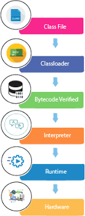

In this section, we are going to learn, what happens while we compile and run the Java program.
Moreover, we will see some questions based on the first program.
What happens at compile time?
At compile time, the Java file is compiled by Java Compiler (It does not interact with OS) and converts
the Java code into bytecode.

What happens at runtime?

After writing the program, programmer needs to compile that program. As soon as the programmer starts compiling the program using javac compiler, the compile time gets started, and it ends when either a .class file is generated after successful compilation or an error is thrown in compilation. In other way we can say, the process of compiling a program is referred as compile time.
How to set path in Java
The path is required to be set for using tools such as javac, java, etc.
If you are saving the Java source file inside the JDK/bin directory, the path is not required to be set
because all the tools will be available in the current directory.
However, if you have your Java file outside the JDK/bin folder, it is necessary to set the path of JDK.
There are two ways to set the path in Java:
- Temporary
- Permanent
Difference between JDK, JRE, and JVM
We must understand the differences between JDK, JRE, and JVM before proceeding further to Java. See the
brief overview of JVM here.
Firstly, let's see the differences between the JDK, JRE, and JVM.
The JVM performs the following main tasks:
JDK is an implementation of any one of the below given Java Platforms released by Oracle Corporation:
Firstly, let's see the differences between the JDK, JRE, and JVM.
JVM
JVM (Java Virtual Machine) is an abstract machine. It is called a virtual machine because it doesn't physically exist. It is a specification that provides a runtime environment in which Java bytecode can be executed. It can also run those programs which are written in other languages and compiled to Java bytecode. JVMs are available for many hardware and software platforms. JVM, JRE, and JDK are platform dependent because the configuration of each OS is different from each other. However, Java is platform independent. There are three notions of the JVM: specification, implementation, and instance.The JVM performs the following main tasks:
- Loads code
- Verifies code
- Executes code
- Provides runtime environment
JRE
JRE is an acronym for Java Runtime Environment. It is also written as Java RTE. The Java Runtime Environment is a set of software tools which are used for developing Java applications. It is used to provide the runtime environment. It is the implementation of JVM. It physically exists. It contains a set of libraries + other files that JVM uses at runtime.JDK
JDK is an acronym for Java Development Kit. The Java Development Kit (JDK) is a software development environment which is used to develop Java applications and applets. It physically exists. It contains JRE + development tools.JDK is an implementation of any one of the below given Java Platforms released by Oracle Corporation:
- Standard Edition Java Platform
- Enterprise Edition Java Platform
- Micro Edition Java Platform
All the content was taken from Javatpoint Website